Decision Trees¶
Graphviz¶
Installing graphviz¶
!apt install -y graphviz !pip install graphviz
A tree example¶
from graphviz import Digraph styles = { 'top': {'shape': 'ellipse', 'style': 'filled', 'color': 'lightblue'}, 'no': {'shape': 'circle', 'style': 'filled', 'color': 'red'}, 'yes': {'shape': 'circle', 'style': 'filled', 'color': 'lightgreen'}, 'qst': {'shape': 'rect'} } example_tree = Digraph() example_tree.node('top', 'Should I attend the ML lecture?', styles['top']) example_tree.node('q1', 'Do I fulfill requirements?', styles['qst']) example_tree.node('q2', 'Do I like CS?', styles['qst']) example_tree.node('no1', 'No ', styles['no']) example_tree.node('q3', 'Is the lecture early in the morning?', styles['qst']) example_tree.node('no2', 'No ', styles['no']) example_tree.node('no3', 'No ', styles['no']) example_tree.node('yes', 'Yes', styles['yes']) example_tree.edge('top', 'q1') example_tree.edge('q1', 'q2', 'Yes') example_tree.edge('q1', 'no1', 'No') example_tree.edge('q2', 'q3', 'Yes') example_tree.edge('q2', 'no2', 'No') example_tree.edge('q3', 'no3', 'Yes') example_tree.edge('q3', 'yes', 'No')
example_tree

Introduction¶
Decision trees¶
-
Supervised learning algorithm - training dataset with known labels
-
Eager learning - final model does not need training data to make prediction (all parameters are evaluated during learning step)
-
It can do both classification and regression
-
A decision tree is built from:
- decision nodes - correspond to features (attributes)
- leaf nodes - correspond to class labels
-
The root of a tree is (should be) the best predictor (feature)
Example¶
import matplotlib.pyplot as plt import numpy as np # just to overwrite default colab style plt.style.use('default') plt.style.use('seaborn-talk')
# first define some points representing two classes grid = np.mgrid[0:10:2, 0:10:2] set01 = np.vstack([grid[0].ravel(), grid[1].ravel()]).T set01 = np.delete(set01, [17, 18, 19, 22, 24], axis=0) grid = np.mgrid[6:16:2, 0:10:2] set02 = np.vstack([grid[0].ravel(), grid[1].ravel()]).T set02 = np.delete(set02, [0, 1, 5, 6, 8], axis=0) plt.scatter(*set01.T) plt.scatter(*set02.T) plt.text(15, 4, "There are two attributes: x and y\n\n" " * each decision node splits dataset based on one of the attributes\n\n" " * each leaf node defines a class label");

plt.scatter(*set01.T) plt.scatter(*set02.T) plt.plot([5, 5], [0, 8], 'r') plt.plot([0, 14], [3, 3], 'g') plt.text(15, 3, "We start with [20, 20] (blue, orange)\n\n" "Red line splits dataset in [15, 0] (left) and [5, 20] (right)\n\n" "Green line split dataset in [10, 6] (bottom) and [10, 14] (top)\n\n" "Red line is a winner and should be the root of our tree");

tree = Digraph() tree.edge("x > 5?\n[20, 20]", "blue\n[15, 0]", "No") tree.edge("x > 5?\n[20, 20]", "y > 3?\n[5, 20]", "Yes") tree.edge("y > 3?\n[5, 20]", "x > 9?\n[4, 6]", "No") tree.edge("y > 3?\n[5, 20]", "almost orange\n[1, 14]", "Yes") tree.edge("x > 9?\n[4, 6]", "blue\n[4, 0]", "No") tree.edge("x > 9?\n[4, 6]", "orange\n[0, 6]", "Yes") tree.edge("almost orange\n[1, 14]", "Should we continue?\nOr would it be overfitting?") tree

-
It is important to start with good predictor
-
Our choice of the root classifies 37.5% of points in the first step
-
Note, that we could also start with
x > 9? -
However, if we started with
y > 3we would never classify a point in the first step - does it mean that it is worse choice?
-
tree = Digraph() tree.edge("y > 3?\n[20, 20]", "x > 9?\n[10, 6]", "No") tree.edge("y > 3?\n[20, 20]", "x > 5?\n[10, 14]", "Yes") tree.edge("x > 9?\n[10, 6]", "blue\n[10, 0]", "No") tree.edge("x > 9?\n[10, 6]", "orange\n[0, 6]", "Yes") tree.edge("x > 5?\n[10, 14]", "blue\n[9, 0]", "No") tree.edge("x > 5?\n[10, 14]", "almost orange\n[1, 14]", "Yes") tree

-
In this case we never have to make more than 2 checks
-
There are two open questions to answer:
-
How to automate the procees of chosing nodes?
-
How deep should we go?
-
ID3 and C4.5 algorithms¶
-
We start with algorithms based on information theory
-
ID3 (Iterative Dichotomiser 3)
-
C4.5 - extension of ID3 (why C4.5? C stands for programming language and 4.5 for version?)
-
C5.0/See5 - improved C4.5 (commercial; single-threaded Linux version is available under GPL though)
-
-
The idea is to find nodes which maximize information gain
Information gain¶
Self-information¶
-
Let X = (x_1, x_2, ..., x_n) be our information source (feature), e.g. weather condition: x_1 = sunny, x_2 = overcast, x_3 = rainy
-
And let P = (p_1, p_2, ..., p_n) be corresponding probrability distribution (or more precisely - probability mass function)
-
We want some measure of information I provided by an event. It should satisfy the following properties:
-
I depends only on the probability of x_i, thus I \equiv I(p_i)
-
I is continuous and deacreasing function of p_i
-
I is non-negative and I(1) = 0
-
if p_i = p_{i, 1} \cdot p_{i, 2} (independent events) then I(p_i) = I(p_{i, 1}) + I(p_{i, 2})
-
-
Logarithmic function satisfies all above condition, so we define self-information as:
I(p) = -\log(p)
-
The most common log base is 2 and then information is in shannons (Sh), also known as bits
-
In the case of natural logarithm the unit is nat (natural unit of information)
-
In the case of base 10 the unit is hartley (Hart), also known as dit
-
x = np.arange(0.01, 1.01, 0.01) plt.xlabel("p") plt.ylabel("I(p)") plt.plot(x, -np.log2(x), label="bit") plt.plot(x, -np.log(x), label="nat") plt.plot(x, -np.log10(x), label="dit") plt.legend();

-
Lets X = (head, tail) with P = (0.5, 0.5)
- We get 1 Sh of information
-
Lets X = (sunny, overcast, rainy) with P = (0.25, 0.75, 0.25)
-
If it is overcast, we get 0.415 Sh of information
-
Otherwise, we get 2 Sh of information
-
-
If an event is more likely we learn less
Information entropy¶
-
Also called Shannon entropy (after the father of intromation theory)
-
Usually information entropy is denoted as H
-
H is defined as the weighted average of the self-information of all possible outcomes
H(X) = \sum\limits_{i=1}^N p_i \cdot I(p_i) = -\sum\limits_{i=1}^N p_i\cdot\log(p_i)
-
Lets consider two case scenario with P = (p, 1 - p), so entropy is given by H = -p \log(p) - (1 - p) \log(1 - p)
p = np.arange(0.01, 1.0, 0.01) plt.xlabel("p") plt.ylabel("H") plt.annotate('we are surprised', xy=(0.5, 1), xytext=(0.5, 0.75), arrowprops=dict(facecolor='black', shrink=0.1)) plt.annotate('we are not that surprised', xy=(1, 0.1), xytext=(0.5, 0.25), arrowprops=dict(facecolor='black', shrink=0.1)) plt.plot(p, -p * np.log2(p) - (1 - p) * np.log2(1 - p));

- Lets consider three case scenario with P = (p, q, 1 - p - q), so entropy is given by H = -p \log(p) - q\log(q) - (1 - p - q) \log(1 - p - q)
from mpl_toolkits import mplot3d # grid of p, q probabilities p, q = np.meshgrid(np.arange(0.01, 1.0, 0.01), np.arange(0.01, 1.0, 0.01)) # remove (set to 0) points which do not fulfill P <= 1 idx = p + q > 1 p[idx] = 0 q[idx] = 0 # calculate entropy (disable warnings - we are aware of log(0)) np.warnings.filterwarnings('ignore') h = -p * np.log2(p) - q * np.log2(q) - (1 - p - q) * np.log2(1 - p - q) # make a plot plt.axes(projection='3d').plot_surface(p, q, h);

Information gain¶
-
Let T be the set of training samples with n possible outcomes, thus T = \{T_1, T_2, ..., T_n\}
-
The entropy is given by
H(T) = -\sum\limits_{i=1}^N p_i\cdot\log(p_i) = -\sum\limits_{i=1}^N \frac{|T_i|}{|T|}\cdot\log(\frac{|T_i|}{|T|})
-
We can also calulate the entropy after T was partitioned in T_i with respect to some feature X
H(T, X) = \sum\limits_{i=1}^N p_i\cdot H(T_i) -
And the information gain is defined as
G(X) = H(T) - H(T, X)
Example¶
-
Lets calculate some example step by step
-
Lets consider a fake dataset
-
two classes: C01, C02
-
three features: X1, X2, X3
-
X1 || A | A | A | B | B | C | C | C | C | --------------------------------------------------------------- X2 || 0 | 0 | 1 | 1 | 0 | 1 | 1 | 1 | 0 | --------------------------------------------------------------- X3 || RED | GRN | GRN | BLU | RED | GRN | BLU | RED | GRN | =============================================================== Class || C01 | C01 | C02 | C02 | C02 | C02 | C01 | C01 | C02 |
from math import log def entropy(*probs): """Calculate information entropy""" try: total = sum(probs) return sum([-p / total * log(p / total, 2) for p in probs]) except: return 0 print(entropy(4, 5), entropy(2, 1), entropy(2, 2))
0.9910760598382222 0.9182958340544896 1.0
-
The root entropy
- We have 9 samples: 4 belong to class C01 and 5 to C02
H(T) = -\frac{4}{9}\log(\frac{4}{9}) - \frac{5}{9}\log(\frac{5}{9}) = 0.99
- We have 9 samples: 4 belong to class C01 and 5 to C02
-
Now lets consider feature X1, which splits data into subsets T_1, T_2, and T_3 (with X1 value A, B, and C, respectively)
-
Within T_1 there are 3 samples: 2 from C01 and 1 from C02
H(T_1) = -\frac{2}{3}\log(\frac{2}{3}) - \frac{1}{3}\log(\frac{1}{3}) = 0.92
-
Within T_2 there are 2 samples: 0 from C01 and 2 from C02
H(T_2) = -\frac{2}{2}\log(\frac{2}{2}) - \frac{0}{2}\log(\frac{0}{2}) = 0.00
-
Within T_3 there are 4 samples: 2 from C01 and 2 from C02
H(T_3) = -\frac{2}{4}\log(\frac{2}{4}) - \frac{2}{4}\log(\frac{2}{4}) = 1.00
-
The resulting entropy is
H(T, X1) = \frac{3}{9}\cdot H(T_1) + \frac{2}{9}\cdot H(T_2) + \frac{4}{9}\cdot H(T_3) = 0.75
-
Thus, infromation gain if the set is split according to X1
G(X1) = H(T) - H(T, X1) = 0.99 - 0.75 = 0.24 \mbox{ Sh }
-
ID3 algorithm¶
-
For every attribute (feature) calculate the entropy
-
Split the training set using the one for which information gain is maximum
-
Continue recursively on subsets using remaining features
Play Golf dataset¶
-
Popular dataset to explain decision trees
-
4 features:
-
outlook: rainy, overcast, sunny
-
temperature: cool, mild, hot
-
humidity: normal, high
-
windy: false, true
-
-
Possible outcomes (play golf?):
-
false
-
true
-
import pandas as pd # first row = headers src = "http://chem-eng.utoronto.ca/~datamining/dmc/datasets/weather_nominal.csv" golf_data = pd.read_csv(src)
golf_data
| Outlook | Temperature | Humidity | Windy | Play golf | |
|---|---|---|---|---|---|
| 0 | Rainy | Hot | High | False | No |
| 1 | Rainy | Hot | High | True | No |
| 2 | Overcast | Hot | High | False | Yes |
| 3 | Sunny | Mild | High | False | Yes |
| 4 | Sunny | Cool | Normal | False | Yes |
| 5 | Sunny | Cool | Normal | True | No |
| 6 | Overcast | Cool | Normal | True | Yes |
| 7 | Rainy | Mild | High | False | No |
| 8 | Rainy | Cool | Normal | False | Yes |
| 9 | Sunny | Mild | Normal | False | Yes |
| 10 | Rainy | Mild | Normal | True | Yes |
| 11 | Overcast | Mild | High | True | Yes |
| 12 | Overcast | Hot | Normal | False | Yes |
| 13 | Sunny | Mild | High | True | No |
Play golf entropy¶
entropy(9, 5)
0.9402859586706309
| Play golf | ============= | yes | no | -> H(T) = 0.94 ------------- | 9 | 5 |
Play golf vs outlook¶
| Play golf |
=============
| yes | no |
------------------------
| sunny | 3 | 2 | 5
outlook | overcast | 4 | 0 | 4
| rainy | 2 | 3 | 5
------------------------
9 5
entropy(3, 2), 0, entropy(2, 3)
(0.9709505944546686, 0, 0.9709505944546686)
\begin{eqnarray} H(\mbox{sunny}) & = & 0.97 \\ H(\mbox{rainy}) & = & 0.97 \\ H(\mbox{overcast}) & = & 0 \end{eqnarray}
\begin{eqnarray} H(T, \mbox{outlook}) & = & P(\mbox{sunny})\cdot H(\mbox{sunny}) + P(\mbox{overcast})\cdot H(\mbox{overcast}) + P(\mbox{rainy})\cdot H(\mbox{rainy}) \\ & = & \frac{5}{14}\cdot 0.97 + \frac{4}{14} \cdot 0 + \frac{5}{14}\cdot 0.97 = 0.69 \end{eqnarray}
\begin{eqnarray} G(\mbox{outlook}) & = & H(T) - H(T, \mbox{outlook}) = 0.94 - 0.69 = 0.25 \end{eqnarray}
Results for all features¶
| Play golf | | Play golf |
============= =============
| yes | no | | yes | no |
------------------------ --------------------
| sunny | 3 | 2 | | hot | 2 | 2 |
outlook | overcast | 4 | 0 | temperature | mild | 4 | 2 |
| rainy | 2 | 3 | | cool | 3 | 1 |
------------------------ --------------------
Info. gain = 0.25 Info gain = 0.03
| Play golf | | Play golf |
============= =============
| yes | no | | yes | no |
------------------------ --------------------
| high | 3 | 4 | | false | 6 | 2 |
humidity | normal | 6 | 1 | windy | true | 3 | 3 |
------------------------ --------------------
Info. gain = 0.15 Info gain = 0.05
Root of the tree¶
-
Start building a tree with the feature with the largest information gain: outlook
-
A branch with entropy 0 is a leaf node: overcast
-
Other branches must be spliited using other features
tree = Digraph() tree.edge("outlook", "sunny") tree.edge("outlook", "overcast") tree.edge("outlook", "rainy") tree.edge("overcast", "yes") tree

Next branch¶
golf_data.loc[golf_data['Outlook'] == "Sunny"]
| Outlook | Temperature | Humidity | Windy | Play golf | |
|---|---|---|---|---|---|
| 3 | Sunny | Mild | High | False | Yes |
| 4 | Sunny | Cool | Normal | False | Yes |
| 5 | Sunny | Cool | Normal | True | No |
| 9 | Sunny | Mild | Normal | False | Yes |
| 13 | Sunny | Mild | High | True | No |
-
In general, one should calculate information gain for each feature for this subset
-
In this case it is clear that we can take windy
tree.edge("sunny", "windy") tree.edge("windy", "false") tree.edge("windy", "true") tree.edge("false", "yes") tree.edge("true", "no") tree
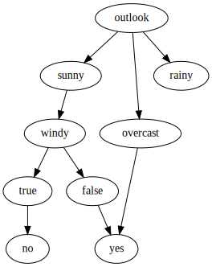
Last branch¶
golf_data.loc[golf_data['Outlook'] == "Rainy"]
| Outlook | Temperature | Humidity | Windy | Play golf | |
|---|---|---|---|---|---|
| 0 | Rainy | Hot | High | False | No |
| 1 | Rainy | Hot | High | True | No |
| 7 | Rainy | Mild | High | False | No |
| 8 | Rainy | Cool | Normal | False | Yes |
| 10 | Rainy | Mild | Normal | True | Yes |
tree.edge("rainy", "humidity") tree.edge("humidity", "high") tree.edge("humidity", "normal") tree.edge("normal", "yes") tree.edge("high", "no ") tree
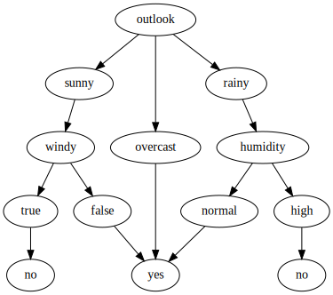
Summary¶
-
We got the final tree for Play Golf dataset using ID3 algorithm
-
We do not even use temperature attribute (for which information gain was 0.03)
-
The main problem is that the algorithm may overfit easily (tree does not stop growing until the whole training set is classified)
-
Imagine some crazy guys went playing on a rainy, windy day with high humidity, beacaue it was still hot
-
With this extra data point we would have to create more branches
-
Is one unique data sample worth to extend the whole tree?
-
-
And there is more disadvantages:
-
It handles only discrete attributes
-
There is a strong bias for features with many possible outcomes
-
And finally, it does not handle missing values
-
C4.5 algorithm¶
-
C4.5 introduces some improvements to ID3:
-
continuous values using threshold
-
tree pruning to avoid overfitting
-
normalized information gain
-
missing values
-
Information gain ratio¶
-
To avoid a bias in favor of features with a lot of different values C4.5 uses information gain ratio instead of information gain
-
Lets define intrinsic value V of an attribute X as
V(X) = -\sum\limits_{i=1}^N \frac{|T_i|}{|T|}\cdot\log(\frac{|T_i|}{|T|})
-
where T_i are samples corresponding to i-th possible value of X feature
-
Information gain ratio R(X) is defined as
R(X) = \frac{G(X)}{V(X)}
Example¶
-
Lets consider a fake data set
-
The goal is to determine if someone plays or not video games
-
We have three features:
-
name - mostly unique
-
sex - 50% females and 50% males
-
age - just old or young
-
-
Looking at data we can say that
-
most young people play video games, why old people don't
-
sex does not matter
-
names are almost distinct
-
name || John | Mark | Anne | Adam | John | Alex | Alex | Xena | Tina | Lucy |
--------------------------------------------------------------------------------------------------------
sex || M | M | F | M | M | F | M | F | F | F |
--------------------------------------------------------------------------------------------------------
age || old | young | old | young | young | young | old | old | young | young |
========================================================================================================
play games || N | Y | Y | Y | Y | N | N | N | Y | Y |
- Information gain for name
h = entropy(4, 6) # dataset entropy H(T) # one John plays and the other one doesn't # in other cases entropy = 0 g_name = h - 2/10 * entropy(1, 1) print(g_name)
0.7709505944546686
- Information gain for sex
# 5 men - 3 play # 5 women - 3 play g_sex = h - 5/10 * entropy(2, 3) - 5/10 * entropy(2, 3) print(g_sex)
0.0
- Information gain for age
# 4 old people - 1 plays # 6 young people - 5 play g_age = h - 4/10 * entropy(1, 3) - 6/10 * entropy(1, 5) print(g_age)
0.256425891682003
-
In ID3 a feature with entropy = 0 is always a winner
- Imagine having all distinct values (e.g. credit card numbers)
-
In this case we would choose name as the best predictor
-
Creating a tree with 8 branches (from 10 samples)
-
Training data would be perfectly classify
-
But it is unlikely that the algorithm would be able to generalize for unseen data
-
-
Lets calculate information gain ratio and see how it changes the choice of the best feature
-
Information gain ratio for name
# 2x John, 2x Alex, 6x unique name g_name / entropy(2, 2, *[1]*6)
0.26384995435159336
- Information gain ratio for sex
# 5 males and 5 females - zero stays zero though g_sex / entropy(5, 5)
0.0
- Information gain ratio for age
# 4x old and 6x young g_age / entropy(4, 6)
0.26409777505314147
-
Based on information gain ratio we choose age as the best predictor
-
Because the denominator in a ratio penalizes features with many values
print("Two possible values:\n") for i in range(0, 11): print("\t({}, {}) split -> entropy = {}".format(i, 10-i, entropy(i, 10-i))) print("\n10 possible values:", entropy(*[1]*10))
Two possible values:
(0, 10) split -> entropy = 0
(1, 9) split -> entropy = 0.4689955935892812
(2, 8) split -> entropy = 0.7219280948873623
(3, 7) split -> entropy = 0.8812908992306927
(4, 6) split -> entropy = 0.9709505944546686
(5, 5) split -> entropy = 1.0
(6, 4) split -> entropy = 0.9709505944546686
(7, 3) split -> entropy = 0.8812908992306927
(8, 2) split -> entropy = 0.7219280948873623
(9, 1) split -> entropy = 0.4689955935892812
(10, 0) split -> entropy = 0
10 possible values: 3.321928094887362
- This datset was handcrafted to make a point, but I hope the message is still clear
Continuous values¶
-
Attributes with continuous values must be first discretize
-
The best way is to find an optimal threshold which splits the set
-
The optimal threshold is the one which maximize the infromation gain
Example¶
-
Lets consider the same example as before
-
But this time age has numerical values
name || John | Mark | Anne | Adam | John | Alex | Alex | Xena | Tina | Lucy |
--------------------------------------------------------------------------------------------------------
sex || M | M | F | M | M | F | M | F | F | F |
--------------------------------------------------------------------------------------------------------
age || 50 | 18 | 65 | 24 | 31 | 18 | 50 | 50 | 24 | 31 |
========================================================================================================
play games || N | Y | Y | Y | Y | N | N | N | Y | Y |
- The possible thesholds are therefore \{18, 24, 31, 50\}
# calculate entropy for all possible thresholds e18 = 2/10 * entropy(1, 1) + 8/10 * entropy(3, 5) e24 = 4/10 * entropy(1, 3) + 6/10 * entropy(3, 3) e31 = 6/10 * entropy(1, 5) + 4/10 * entropy(3, 1) e50 = 9/10 * entropy(4, 5) + 1/10 * entropy(0, 1) print("With threshold = {}, entropy = {}".format(18, e18)) print("With threshold = {}, entropy = {}".format(24, e24)) print("With threshold = {}, entropy = {}".format(31, e31)) print("With threshold = {}, entropy = {}".format(50, e50))
With threshold = 18, entropy = 0.963547202339972 With threshold = 24, entropy = 0.9245112497836532 With threshold = 31, entropy = 0.7145247027726656 With threshold = 50, entropy = 0.8919684538544
-
The best test is
if age > 31- it splits the dataset to 6 samples (with 5 players) and 4 samples (with 3 non-players)
-
Please note, that the best threshold may change once a node is created
Unknown parameters¶
-
In the case some samples are incomplete one needs to correct the information gain
-
The information gain is calculated as before for samples with known attributes
-
But then it is normalized with respect to the probability that the given attribute has known values
-
Lets define the factor F as the ratio of the number of samples with known value for a given feature to the number of all samples in a dataset
-
Then information gain is defines as
G(X) = F\cdot (H(T) - H(T, X))
-
Please note, that F = 1 if all values are known
-
Otherwise, information gain is scaled accordingly
Pruning¶
-
The algorithm creates as many nodes as needed to classify all test samples
-
It may lead to overfitting and the resulting tree would fail to classify correctly unseen samples
-
To avoid this one can prune a tree
-
pre-pruning (early stopping)
-
stop building a tree before leaves with few samples are produced
-
how to decide when it is good time to stop? e.g. using cross-validation on validation set (stop if the error does not increase significantly)
-
underfitting if stop to early
-
-
post-pruning
-
let a tree grow completely
-
then go from bottom to top and try to replace a node with a leaf
-
if there is improvement in accuracy - cut a tree
-
if the accuracy stays the same - cut a tree (Occam's razor)
-
otherwise leave a node
-
-
First example - step by step¶
-
Lets consider the problem from the beginning of the lecture
-
Our dataset has 20 blue points and 20 orange points
-
Each point has two features (both are numerical)
-
We expect overfitting if pruning is not applied
-
We will calculate everything step by step (it is boring, but demonstrates how the algorithm works)
# first define some points representing two classes grid = np.mgrid[0:10:2, 0:10:2] set01 = np.vstack([grid[0].ravel(), grid[1].ravel()]).T set01 = np.delete(set01, [17, 18, 19, 22, 24], axis=0) grid = np.mgrid[6:16:2, 0:10:2] set02 = np.vstack([grid[0].ravel(), grid[1].ravel()]).T set02 = np.delete(set02, [0, 1, 5, 6, 8], axis=0) plt.scatter(*set01.T) plt.scatter(*set02.T);

Validation set¶
-
We will use 10 points from the dataset for validation
-
This time selected manually to perform by hand calculations
-
On the plot below X denotes validation samples
# split dataset to training and validation set # note, we should splt them randomly # but here we do this by hand valid_idx = [3, 7, 10, 14, 18] blue_valid = set01[valid_idx] blue_train = np.delete(set01, valid_idx, axis=0) orange_valid = set02[valid_idx] orange_train = np.delete(set02, valid_idx, axis=0) # circles - training set # x - validation set plt.scatter(*blue_train.T) plt.scatter(*blue_valid.T, color='C0', marker='x') plt.scatter(*orange_train.T) plt.scatter(*orange_valid.T, color='C1', marker='x');

Thresholds finder¶
-
When building a tree we need to calculate information gain for every threshold in current subset
-
Every subset S has N_b blue samples and N_o orange samples
-
After split into accoring to some threshold we get two subsets
-
n_b of blue points and n_o of orange points (S_1)
-
N_b - n_b of blue points and N_o - n_o of orange points (S_2)
-
def info_gain(Nb, No, nb, no): """Calculate information gain for given split""" h = entropy(Nb, No) # H(S) total = Nb + No # total number of samples subtotal = nb + no # number of samples in subset return h - subtotal / total * entropy(nb, no) \ - (total - subtotal) / total * entropy(Nb - nb, No - no)
Feature X¶
-
We need to calculate information gain ratio for the best threshold (the one that maximize information gain)
-
Possible thresholds \{0, 2, 4, 6, 8, 10, 12\}
Nb = 15 No = 15 splits = {"0": (4, 0), "2 ": (8, 0), "4": (11, 0), "6": (13, 3), "8": (15, 4), "10": (15, 8), "12": (15, 11)} for threshold, (no, nb) in splits.items(): print("Threshold = {}\t -> {}".format(threshold, info_gain(Nb, No, no, nb)))
Threshold = 0 -> 0.14818913558232172 Threshold = 2 -> 0.33824492595034883 Threshold = 4 -> 0.5297578726233217 Threshold = 6 -> 0.3525728312615027 Threshold = 8 -> 0.5297578726233217 Threshold = 10 -> 0.28538113149388267 Threshold = 12 -> 0.14818913558232172
-
We got the same cuts as predicted at the beginning of the lecture: x > 4 or x > 8
-
Lets choose x > 4 and calculate information gain ratio
# 4 samples with x = 0, 4 samples with x = 2 etc info_gain(Nb, No, *splits["4"]) / entropy(4, 4, 3, 5, 3, 4, 3, 4)
0.1779055922617179
Feature Y¶
-
Repeat the procedure
-
This time possible thresholds = \{0, 2, 4, 6\}
Nb = 15 No = 15 splits = {"0": (4, 2), "2": (8, 5), "4": (10, 8), "6": (13, 11)} for threshold, (no, nb) in splits.items(): print("Threshold = {}\t -> {}".format(threshold, info_gain(Nb, No, no, nb)))
Threshold = 0 -> 0.02035297064032593 Threshold = 2 -> 0.029594041354123246 Threshold = 4 -> 0.013406861436605633 Threshold = 6 -> 0.0203529706403259
-
The best cut is y > 2 (as predicted before)
-
Lets calculate information gain ratio
info_gain(Nb, No, *splits["2"]) / entropy(6, 7, 5, 6, 6)
0.01278981522839263
The root¶
-
At the beginning we discussed the choice of y as a root predictor
-
ID3 and C4.5 are greedy algorithms and select optimal solution at given stage
-
We can start to build the tree with the first best predictor
tree = Digraph() tree.edge("x > 4?\n[15, 15]", "blue\n[11, 0]", "No") tree.edge("x > 4?\n[15, 15]", "[4, 15]", "Yes") tree
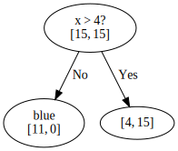
Branch x > 4¶
-
Now we have to repeat the procedure for the branch [4, 15]
-
Lets take a look what points are left
plt.xlim([5.5, 14.5]) plt.scatter(*blue_train.T) plt.scatter(*orange_train.T);
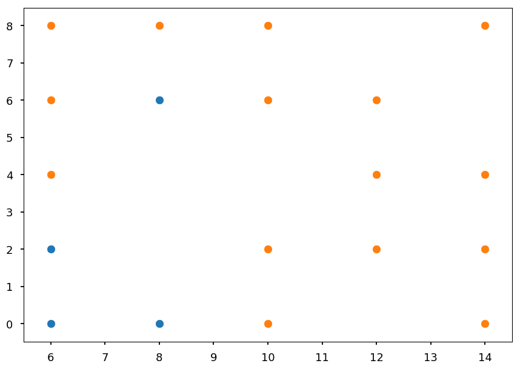
- Check x maximum information gain ratio
Nb = 4 No = 15 splits = {"6": (2, 3), "8": (4, 4), "10": (4, 8), "12": (4, 11)} for threshold, (no, nb) in splits.items(): print("Threshold = {}\t -> {}".format(threshold, info_gain(Nb, No, no, nb)))
Threshold = 6 -> 0.051004839414443226 Threshold = 8 -> 0.32143493796317624 Threshold = 10 -> 0.16251125329718286 Threshold = 12 -> 0.08198172064120202
print("Information gain ratio with x > 8:", info_gain(Nb, No, *splits["8"]) / entropy(5, 3, 4, 3, 4))
Information gain ratio with x > 8: 0.14010311259651076
- Check y maximum information gain ratio
Nb = 4 No = 15 splits = {"0": (2, 2), "2": (3, 5), "4": (3, 6), "6": (4, 9)} for threshold, (no, nb) in splits.items(): print("Threshold = {}\t -> {}".format(threshold, info_gain(Nb, No, no, nb)))
Threshold = 0 -> 0.08471690647404045 Threshold = 2 -> 0.08617499693494635 Threshold = 4 -> 0.06066554625879636 Threshold = 6 -> 0.13320381570773476
print("Information gain ratio with y > 6:", info_gain(Nb, No, *splits["6"]) / entropy(4, 4, 3, 4, 4))
Information gain ratio with y > 6: 0.05757775370755489
-
Once again x is a winner
-
And we have a new node
tree = Digraph() tree.edge("x > 4?\n[15, 15]", "blue\n[11, 0]", "No") tree.edge("x > 4?\n[15, 15]", "x > 8?\n[4, 15]", "Yes") tree.edge("x > 8?\n[4, 15]", "[4, 4]", "No") tree.edge("x > 8?\n[4, 15]", "orange\n[0, 11]", "Yes") tree
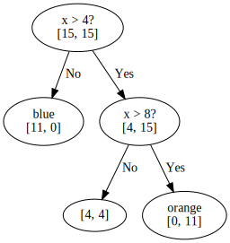
Branch x<= 8¶
- We will continue until the tree is fully grown
plt.xlim([5.5, 8.5]) plt.scatter(*blue_train.T) plt.scatter(*orange_train.T);

- Again, the best cut may be pretty obvious, but lets check the math
- We have one possible cut in x
Nb = 4 No = 4 print("Information gain ratio with x > 6:", info_gain(Nb, No, 2, 3) / entropy(5, 3))
Information gain ratio with x > 6: 0.05112447853477686
- And usual threshold candidates in y
splits = {"0": (2, 0), "2": (3, 0), "4": (3, 1), "6": (4, 2)} for threshold, (no, nb) in splits.items(): print("Threshold = {}\t -> {}".format(threshold, info_gain(Nb, No, no, nb)))
Threshold = 0 -> 0.31127812445913283 Threshold = 2 -> 0.5487949406953986 Threshold = 4 -> 0.1887218755408671 Threshold = 6 -> 0.31127812445913283
print("Information gain ratio with y > 2:", info_gain(Nb, No, *splits["2"]) / entropy(2, 1, 1, 2, 2))
Information gain ratio with y > 2: 0.24390886253128827
- And the tree is growing
tree = Digraph() tree.edge("x > 4?\n[15, 15]", "blue\n[11, 0]", "No") tree.edge("x > 4?\n[15, 15]", "x > 8?\n[4, 15]", "Yes") tree.edge("x > 8?\n[4, 15]", "y > 2?\n[4, 4]", "No") tree.edge("x > 8?\n[4, 15]", "orange\n[0, 11]", "Yes") tree.edge("y > 2?\n[4, 4]", "blue\n[3, 0]", "No") tree.edge("y > 2?\n[4, 4]", "[1, 4]", "Yes") tree

Branch y > 2¶
plt.xlim([5.5, 8.5]) plt.ylim([3.5, 8.5]) plt.scatter(*blue_train.T) plt.scatter(*orange_train.T);
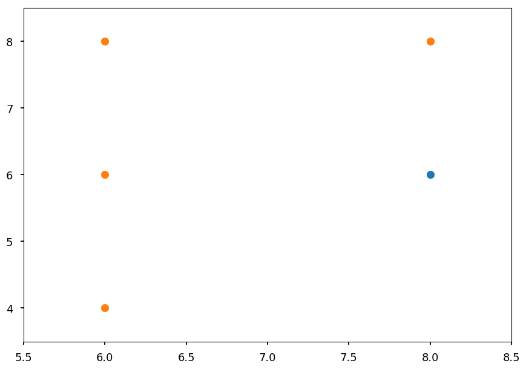
Nb = 1 No = 4 print("Information gain ratio with x > 6:", info_gain(Nb, No, 0, 3) / entropy(3, 2))
Information gain ratio with x > 6: 0.33155970728682876
print("Information gain ratio with y > 4:", info_gain(Nb, No, 0, 1) / entropy(1, 2, 2)) print("Information gain ratio with y > 6:", info_gain(Nb, No, 1, 2) / entropy(1, 2, 2))
Information gain ratio with y > 4: 0.047903442721748145 Information gain ratio with y > 6: 0.11232501392736344
The final tree¶
tree = Digraph() tree.edge("x > 4?\n[15, 15]", "blue\n[11, 0]", "No") tree.edge("x > 4?\n[15, 15]", "x > 8?\n[4, 15]", "Yes") tree.edge("x > 8?\n[4, 15]", "y > 2?\n[4, 4]", "No") tree.edge("x > 8?\n[4, 15]", "orange\n[0, 11]", "Yes") tree.edge("y > 2?\n[4, 4]", "blue\n[3, 0]", "No") tree.edge("y > 2?\n[4, 4]", "x > 6?\n[1, 4]", "Yes") tree.edge("x > 6?\n[1, 4]", "orange\n[0, 3]", "No") tree.edge("x > 6?\n[1, 4]", "y > 6?\n[1, 1]", "Yes") tree.edge("y > 6?\n[1, 1]", "blue\n[1, 0]", "No") tree.edge("y > 6?\n[1, 1]", "orange\n[0, 1]", "Yes") tree
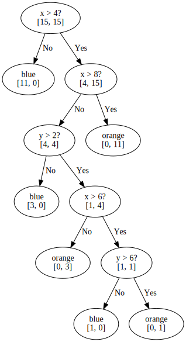
-
It is likely that this tree is overfitted
-
We will proceed with pruning as it was explained
-
But first lets implement decision rules to measure accuracy
def tree_nominal(x, y): """Implementation of above tree""" if x <= 4: return "blue" elif x > 8: return "orange" elif y <= 2: return "blue" elif x <= 6: return "orange" else: return "orange" if y > 6 else "blue"
Sanity check¶
- If the tree is built correctly we expect 100% accuracy on training set
for x, y in blue_train: print(tree_nominal(x, y), end=' ')
blue blue blue blue blue blue blue blue blue blue blue blue blue blue blue
for x, y in orange_train: print(tree_nominal(x, y), end=' ')
orange orange orange orange orange orange orange orange orange orange orange orange orange orange orange
Accuracy before pruning¶
def accuracy(samples, tree): """Just print the result of classification""" for x, y in samples: print("({}, {}) -> {}".format(x, y, tree(x, y)))
accuracy(blue_valid, tree_nominal)
(0, 6) -> blue (2, 4) -> blue (4, 0) -> blue (4, 8) -> blue (8, 2) -> blue
accuracy(orange_valid, tree)
(8, 4) -> blue (10, 4) -> orange (12, 0) -> orange (12, 8) -> orange (14, 6) -> orange
Pruning I¶
-
We want to prune last decision node y > 6
-
In general, majority decides about the leaf node class
-
As it is a tie here, lets check both
def tree_prune01a(x, y): """Implementation of above tree""" if x <= 4: return "blue" elif x > 8: return "orange" elif y <= 2: return "blue" elif x <= 6: return "orange" else: return "blue" def tree_prune01b(x, y): """Implementation of above tree""" if x <= 4: return "blue" elif x > 8: return "orange" elif y <= 2: return "blue" else: return "orange"
accuracy(blue_valid, tree_prune01a)
(0, 6) -> blue (2, 4) -> blue (4, 0) -> blue (4, 8) -> blue (8, 2) -> blue
accuracy(orange_valid, tree_prune01a)
(8, 4) -> blue (10, 4) -> orange (12, 0) -> orange (12, 8) -> orange (14, 6) -> orange
-
Pruning does not change the accuracy
-
We always use Occam's razor and
prune01ais preferred over nominal tree -
But lets see how
prune01bworks
accuracy(blue_valid, tree_prune01b)
(0, 6) -> blue (2, 4) -> blue (4, 0) -> blue (4, 8) -> blue (8, 2) -> blue
accuracy(orange_valid, tree_prune01b)
(8, 4) -> orange (10, 4) -> orange (12, 0) -> orange (12, 8) -> orange (14, 6) -> orange
-
In this case we even get the increase of the accuracy
-
We decide to prune a tree by replacing y > 6 decision node with "orange" leaf node
-
Which automatically removes x > 6 decision node
tree = Digraph() tree.edge("x > 4?\n[15, 15]", "blue\n[11, 0]", "No") tree.edge("x > 4?\n[15, 15]", "x > 8?\n[4, 15]", "Yes") tree.edge("x > 8?\n[4, 15]", "y > 2?\n[4, 4]", "No") tree.edge("x > 8?\n[4, 15]", "orange\n[0, 11]", "Yes") tree.edge("y > 2?\n[4, 4]", "blue\n[3, 0]", "No") tree.edge("y > 2?\n[4, 4]", "orange\n[1, 4]", "Yes") tree

Pruning II¶
-
Now, lets see the accuracy after removing y > 2 node
-
It is once again a tie, so lets check both scenarios
def tree_prune02a(x, y): """Implementation of above tree""" if x <= 4: return "blue" else: return "orange" def tree_prune02b(x, y): """Implementation of above tree""" if x <= 4: return "blue" elif x > 8: return "orange" else: return "blue"
accuracy(blue_valid, tree_prune02a)
(0, 6) -> blue (2, 4) -> blue (4, 0) -> blue (4, 8) -> blue (8, 2) -> orange
accuracy(orange_valid, tree_prune02a)
(8, 4) -> orange (10, 4) -> orange (12, 0) -> orange (12, 8) -> orange (14, 6) -> orange
accuracy(blue_valid, tree_prune02b)
(0, 6) -> blue (2, 4) -> blue (4, 0) -> blue (4, 8) -> blue (8, 2) -> blue
accuracy(orange_valid, tree_prune02b)
(8, 4) -> blue (10, 4) -> orange (12, 0) -> orange (12, 8) -> orange (14, 6) -> orange
-
In both cases the error increased
-
We stop pruning and leave the tree as it is in
prune01bversion
Summary¶
-
C4.5 algorithm gives the full and clear prescription for building decision trees
-
It may look as a long procedure, but it is only because I wanted to show everything step by step and avoid "after a few trivial steps..."
-
ID3/C4.5/C5.0 are based on information theory
-
There is alternative procedure based on gini impurity, which is used by CART
CART¶
-
CART stands for Classification and Regression Tree
-
It was created independently from ID3 (more or less at the same time)
-
The main differences:
-
it creates binary trees (each decision node has two branches)
-
it uses gini impurity instead of information gain
-
it supports numerical target variables (regression)
-
Gini impurity¶
-
Let T = \{T_1, T_2, ..., T_n\} be the set of n classes
-
and P = \{p_1, p_2, ..., p_n\} be the probability distribution
-
where p_i is the probability that a sample belongs to class T_i
-
and 1 - p_i is the probability that it belongs to another class
-
Gini impurity is defines as
I(P) = \sum\limits_{i=1}^n p_i\cdot (1 - p_i) = \sum\limits_{i=1}^n p_i - \sum\limits_{i=1}^n p_i^2 = 1 - \sum\limits_{i=1}^n p_i^2
-
As before (for entropy), lets consider two case scenario with P = (p, 1 - p), so gini impurity is given by I = 1 - p^2 - (1 - p)^2 = -2p(p - 1)
p = np.arange(0.01, 1.0, 0.01) plt.xlabel("p") plt.ylabel("surprise factor") plt.plot(p, -p * np.log2(p) - (1 - p) * np.log2(1 - p), label="Entropy"); plt.plot(p, -2*p*(p - 1), label="Gini impurity") plt.legend();

Play Golf¶
- Lets consider once again Play Golf dataset
import pandas as pd # first row = headers src = "http://chem-eng.utoronto.ca/~datamining/dmc/datasets/weather_nominal.csv" golf_data = pd.read_csv(src)
golf_data
| Outlook | Temperature | Humidity | Windy | Play golf | |
|---|---|---|---|---|---|
| 0 | Rainy | Hot | High | False | No |
| 1 | Rainy | Hot | High | True | No |
| 2 | Overcast | Hot | High | False | Yes |
| 3 | Sunny | Mild | High | False | Yes |
| 4 | Sunny | Cool | Normal | False | Yes |
| 5 | Sunny | Cool | Normal | True | No |
| 6 | Overcast | Cool | Normal | True | Yes |
| 7 | Rainy | Mild | High | False | No |
| 8 | Rainy | Cool | Normal | False | Yes |
| 9 | Sunny | Mild | Normal | False | Yes |
| 10 | Rainy | Mild | Normal | True | Yes |
| 11 | Overcast | Mild | High | True | Yes |
| 12 | Overcast | Hot | Normal | False | Yes |
| 13 | Sunny | Mild | High | True | No |
Gini impurity¶
-
We treat all values as they are continues
-
And consider all possible split
-
Every split leads to two subsets S_1 and S_2
-
And gini impurity for a set S for given split is given by:
I(S) = \frac{|S_1|}{|S|}\cdot I(S_1) + \frac{|S_2|}{|S|}\cdot I(S_2)
def gini(*distribution): """Calculate gini impurity for given ditribution of samples""" sum2 = sum(distribution)**2 # normalization factor return 1 - sum([p**2 for p in distribution])/sum2
def gini_split(s1, s2, g1, g2): """Calcualte impurity for given split s1 -- the size of S1 subset s1 -- the size of S2 subset g1 -- I(S1) g2 -- I(S2) """ s = s1 + s2 # the total set size return s1/s * g1 + s2/s * g2
| Play golf |
=============
| yes | no |
-------------------
| yes | 2 | 3 | 5
rainy | no | 7 | 2 | 9
-------------------
9 5
gini_split(5, 9, gini(2, 3), gini(7, 2))
0.3936507936507937
| Play golf |
=============
| yes | no |
-------------------
| yes | 3 | 2 | 5
sunny | no | 6 | 3 | 9
-------------------
9 5
gini_split(5, 9, gini(3, 2), gini(6, 3))
0.45714285714285713
| Play golf |
=============
| yes | no |
-------------------
| yes | 4 | 0 | 4
overcast | no | 5 | 5 | 10
-------------------
9 5
gini_split(4, 10, gini(4, 0), gini(5, 5))
0.35714285714285715
-
From Outlook feature the best choice is Overcast as it minimizes impurity
-
However, we would have to check other features and choose the best predictor from all possibilities
-
We have one step by step example done though
-
So lets use some tool
Scikit learn¶
-
One step by step example is behind us, so now lets use some tool
-
CART is implemented in
scikit-learn -
However, their implementation takes only numerical values
-
So we will use
LabelDecoderto convert all values to numbers
from sklearn.preprocessing import LabelEncoder # pandas.DataFrame.apply applies a function to given axis (0 by default) # LabelEncoder encodes class labels with values between 0 and n-1 golf_data_num = golf_data.apply(LabelEncoder().fit_transform)
golf_data_num
| Outlook | Temperature | Humidity | Windy | Play golf | |
|---|---|---|---|---|---|
| 0 | 1 | 1 | 0 | 0 | 0 |
| 1 | 1 | 1 | 0 | 1 | 0 |
| 2 | 0 | 1 | 0 | 0 | 1 |
| 3 | 2 | 2 | 0 | 0 | 1 |
| 4 | 2 | 0 | 1 | 0 | 1 |
| 5 | 2 | 0 | 1 | 1 | 0 |
| 6 | 0 | 0 | 1 | 1 | 1 |
| 7 | 1 | 2 | 0 | 0 | 0 |
| 8 | 1 | 0 | 1 | 0 | 1 |
| 9 | 2 | 2 | 1 | 0 | 1 |
| 10 | 1 | 2 | 1 | 1 | 1 |
| 11 | 0 | 2 | 0 | 1 | 1 |
| 12 | 0 | 1 | 1 | 0 | 1 |
| 13 | 2 | 2 | 0 | 1 | 0 |
- Now, lets splits our dataset to features and labels
# DataFrame.iloc makes an access thourgh indices # we want all rows and first 4 columns for features # and the last column for labels data = np.array(golf_data_num.iloc[:, :4]) target = np.array(golf_data_num.iloc[:, 4])
- Once data is prepared, creating a tree is as easy as 2 + 2 -1
from sklearn import tree golf_tree = tree.DecisionTreeClassifier() golf_tree.fit(data, target);
sklearn.treesupports drawing a tree usinggraphviz
import graphviz # dot is a graph description language dot = tree.export_graphviz(golf_tree, out_file=None, feature_names=golf_data.columns.values[:4], class_names=["no", "yes"], filled=True, rounded=True, special_characters=True) # we create a graph from dot source using graphviz.Source graph = graphviz.Source(dot) graph
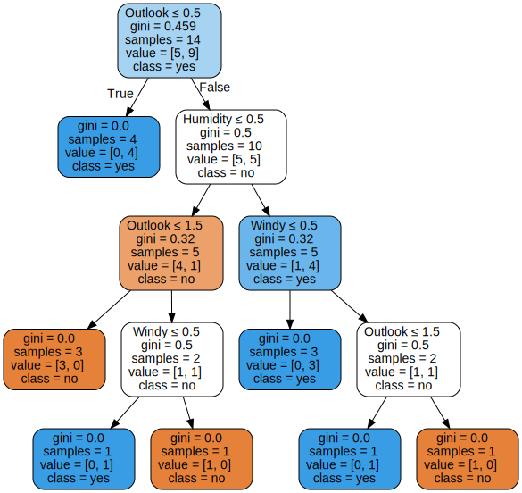
- Please note, that in the case of a real problem we would want to have a validation set and perform a pruning (
scikit-learndoes not support it though)
Regression¶
-
The difference now is that targets are numerical values (instead of categorical), e.g. in golf data - number of hours played instead of "yes / no"
-
Features may be either discrete or continuous
-
The idea is the same though - we want to create a binary tree and minimize the error on in each leaf
-
However, having continuous values as targets we can not simply use entropy or gini
-
We need to use different measurement - variance
V(X) = \frac{1}{n}\sum\limits_{i=1}^n (x_i - \bar x)^2
-
where X = \{x_1, ..., x_n\} and \bar x is the average value
-
Note, that here x_i are equally likely
Simple example¶
-
Before we learn how to grow a regression tree, lets take a look how it works on a simple example
-
Lets consider data distributed according to x^2 (with some noise, obviously)
-
It means with have continuous features (x) and targets (y)
-
We will split by hand the domain in 0.3 and 0.6
X = np.random.sample(50) Y = np.array([x**2 + np.random.normal(0, 0.05) for x in X]) plt.xlabel("x") plt.ylabel("y") plt.scatter(X, Y, color='b') plt.plot([0.3, 0.3], [-0.2, 1.2], 'g--') plt.plot([0.6, 0.6], [-0.2, 1.2], 'g--');

- The corresponding tree would look like this
tree = Digraph() tree.edge("x < 0.3?", "?", "No") tree.edge("x < 0.3?", "x < 0.6?", "Yes") tree.edge("x < 0.6?", "? ", "No") tree.edge("x < 0.6?", "? ", "Yes") tree
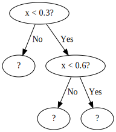
- For each split lets find a value \bar y
def avg(X, Y, x_min, x_max): """Return the average value in (x_min, x_max) range""" n = 0 # number of samples in given split avg = 0 # average value for x, y in zip(X, Y): if x >= x_min and x < x_max: n += 1 avg += y return avg / n
plt.scatter(X, Y, color='b') plt.plot([0.3, 0.3], [-0.2, 1.2], 'g--') plt.plot([0.6, 0.6], [-0.2, 1.2], 'g--') y = avg(X, Y, 0, 0.3) plt.plot([0.0, 0.3], [y, y], 'r') y = avg(X, Y, 0.3, 0.6) plt.plot([0.3, 0.6], [y, y], 'r') y = avg(X, Y, 0.6, 1) plt.plot([0.6, 1.0], [y, y], 'r');

- Alternatively, one could do linear regression for split
Growing a tree¶
-
The idea is similar as for numerical values in classification problems
-
For each feature we check all possible splits and calculate variance
-
We choose a binary split which minimzes variance
from sklearn.tree import DecisionTreeRegressor # create a decision tree regressor fit = DecisionTreeRegressor() # and grow it (note that X must be reshaped) fit.fit(np.reshape(X, (-1, 1)), Y);
# prepare test sample with "newaxis" trick X_test = np.arange(0.0, 1.0, 0.01)[:, np.newaxis] Y_test = fit.predict(X_test)
plt.scatter(X, Y, color='b') plt.plot(X_test, Y_test);
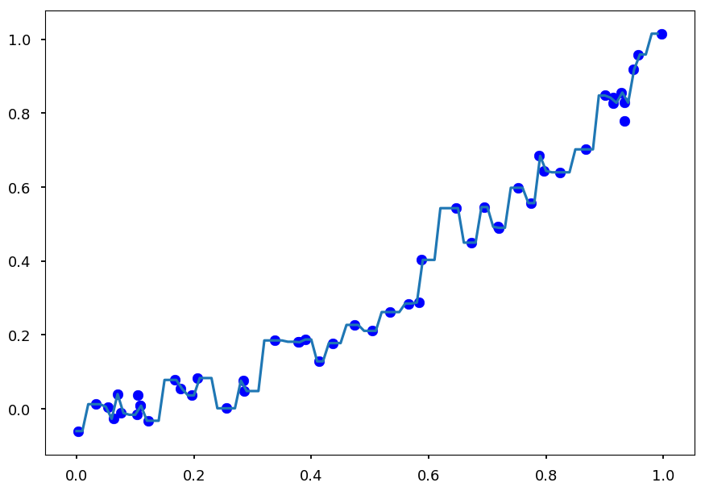
-
And this is a perfect example of overfitting
-
Each point was classified as a separate target
-
Beacause without any stopping criterion the tree is growing until there is a single point in a leaf
-
There are several strategies to pre-prune a tree:
-
define a max depth of a tree
-
define a minimum number of samples in a leaf
-
define a minimum impurity
-
define a minimum impurity decrease
-
-
Whatever method is chosen you get a hyperparameter
-
And we already know how to find an optimal hyperparameter: cross-validation
Tree: cross-validation¶
-
To make it easier to check all possible methods lets create a simple class to do that for us
-
It takes training data and hyperparameter name (as named in
scikit-learn) -
It can change hyperparameter
-
It can perform a cross-validation for a set of hyperparameter values
-
It can make accuracy and best fit plots
from sklearn.model_selection import cross_val_score from sklearn.tree import DecisionTreeRegressor class TreeCV: """Perform a cross-validation for chosen hyperparameter""" def __init__(self, X, Y, hp="max_depth"): """Save training data""" self.X = X # features self.Y = Y # targets self.hp = hp # hyperparameter def set_method(self, hp): """Set hyperparameter to use""" self.hp = hp def cross_me(self, *hp_vals): """Perform cross validation for given hyperparameter values""" self.scores = [] # the accuracy table self.best = None # the best fit best_score = 0 for hp in hp_vals: # create a tree with given hyperparameter cut fit = DecisionTreeRegressor(**{self.hp: hp}) # calculate a cross validation scores and a mean value score = cross_val_score(fit, np.reshape(X, (-1, 1)), Y).mean() # update best fit if necessary if score > best_score: self.best = fit best_score = score self.scores.append([hp, score]) # train the best fit self.best.fit(np.reshape(X, (-1, 1)), Y) def plot(self): """Plot accuracy as a function of hyperparameter values and best fit""" plt.figure(figsize=(15, 5)) plt.subplot(1, 2, 1) plt.xlabel(self.hp) plt.ylabel("accuracy") plt.plot(*zip(*self.scores)) plt.subplot(1, 2, 2) X_test = np.arange(0.0, 1.0, 0.01)[:, np.newaxis] Y_test = self.best.predict(X_test) plt.scatter(self.X, self.Y, color='b', marker='.', label="Training data") plt.plot(X_test, X_test * X_test, 'g', label="True distribution") plt.plot(X_test, Y_test, 'r', label="Decision tree") plt.legend()
Traning dataset¶
X = np.random.sample(200) Y = np.array([x**2 + np.random.normal(0, 0.05) for x in X])
max_depth¶
tree_handler = TreeCV(X, Y) tree_handler.cross_me(*range(1, 10)) tree_handler.plot()
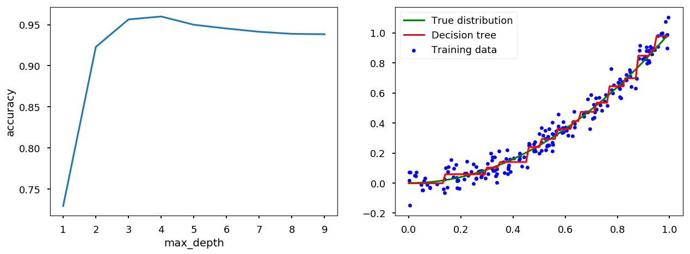
min_samples_leaf¶
tree_handler.set_method("min_samples_leaf") tree_handler.cross_me(*range(1, 10)) tree_handler.plot()
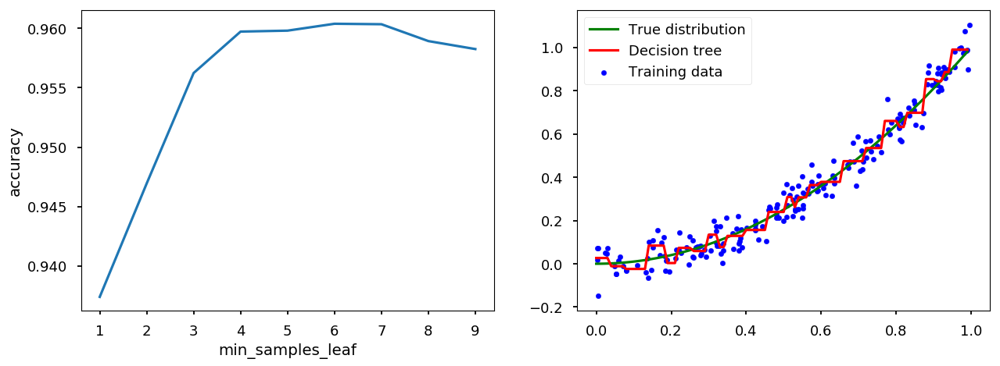
min_impurity_split¶
# min_impurity_split is depracated so lets disable warnings import warnings warnings.filterwarnings("ignore", category=DeprecationWarning)
tree_handler.set_method("min_impurity_split") tree_handler.cross_me(*np.arange(0.0, 5e-3, 1e-4)) tree_handler.plot()

min_impurity_decrease¶
tree_handler.set_method("min_impurity_decrease") tree_handler.cross_me(*np.arange(0.0, 5e-4, 1e-5)) tree_handler.plot()

Bias-Variance trade-off¶
+================+================+
/\ | /\
/ \ | / \
/ \ | / \
/ \ | / \
/ \ | / \
/ variance \ | / bias \
^^^^^^^^^^^^ | ^^^^^^^^^^^^
|
|
|
overfitting <----------+---------> underfitting
-
Bias is an error coming from wrong model assumptions, which do not allow an algorithm to learn all patterns from training data.
-
Variance is an error coming from sensivity to features specific for training data.
-
High bias leads to underfitting and high variance to overfitting.
-
Total error also depends on irreducible error (noise that can not be reduced by algorithm)
-
Ultmiate goal is to minimize the total error
# fake bias, variance and noise complexity = np.arange(1, 2, 0.1) variance = np.power(complexity, 5) bias2 = variance[::-1] irreducible = [10*np.random.normal(abs(x - 1.5), 0.01) for x in complexity] # total error = variance + bias^2 + irreducible total = variance + bias2 + irreducible plt.xticks([]) plt.yticks([]) plt.xlabel("Algorithm complexity") plt.ylabel("Error") plt.plot(complexity, variance, 'C0o-', label='Variance') plt.plot(complexity, bias2, 'C1o-', label="Bias^2") plt.plot(complexity, total, 'C2o-', label="Total = Bias^2 + Variance + Irreducible error") plt.plot([1.5, 1.5], [0, 25], 'C3--') plt.text(1.0, 7, "$\longleftarrow$ better chance of generalizing", color='C0') plt.text(1.6, 7, "better chance of approximating $\longrightarrow$", color='C1') plt.legend();
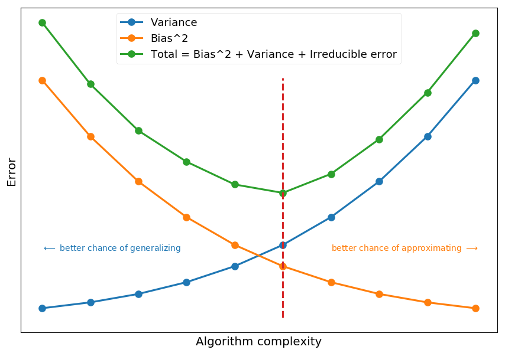
-
Decision trees are sensitive to splits - small changes in training data may change a tree structure
-
deep trees tend to have high variance and low bias
-
shallow trees tend to have low variance and high bias
-
Quick math¶
Basic¶
-
The general goal of regression is to find how some dependent variable (target, y) is changing when independent variable (feature, x) varies
-
Lets assume there is some true relationship describing this dependence y = f(x)
-
We want to find f(x) from observations of (x, y) pairs
-
Although, in real life we get some noisy observation, so y = f(x) + \epsilon
-
As we do not know function f(x) we want to approximate it with some other function g(x) (estimator)
-
In general, g(x) is a parametrized model which can take many possible functional form
- e.g. g(x) = a\cdot x^2 + b\cdot x + c can take different coefficients (based on a training dataset)
Bias and variance¶
-
Lets imagine there are N possible training datasets \{D_1, D_2, ..., D_N\}
-
For a given dataset one gets an estimators g^{(D)}(x)
-
Lets denote the expected estimator by \mathbf{E}_{D}\left[g^{(D)}(x)\right] \equiv \bar g(x)
-
If N is large we can approximate it by an average over all datasets (law of large numbers)
\bar g(x) \approx \frac{1}{N}\sum\limits_{i=1}^N g^{(D_i)}(x)
-
The variance of an estimator tells us how far particular predictions are from the mean value
var = \mathbf{E}_{D}\left[\left(g^{(D)}(x) - \bar g(x)\right)^2\right]
-
Thus, if the training does not depend on the choice of a dataset the variance is low
-
The bias of an estimator tells us how far the mean value is from the true value
bias = \bar g(x) - f(x)
-
Thus, if the model decribes data accurately the bias is low
-
Please note the hidden assumption that all possible values of x are equally likely
Goodness of a model¶
-
The common practice to determine the goodness of a model fit is to calculate mean squared error
-
The mean squared error is, well, the mean value of error squared:
mse = \mathbf{E}_{x}\left[\mathbf{E}_{D}\left[\left(g^{(D)}(x) - y\right)^2\right]\right]
-
Lets consider MSE for a particlar point x, y = f(x) + \epsilon, so
mse = \mathbf{E}_{D}\left[\left(g^{(D)}(x) - y\right)^2\right] = \mathbf{E}_{D}\left[\left(g^{(D)}(x)\right)^2\right]- 2\cdot\mathbf{E}_{D}\left[g^{(D)}(x)\cdot y\right] + \mathbf{E}_{D}\left[y^2\right]
-
Here, we used the linearity of the expected value operator. Lets use another common property: \mathbf{E}\left[X^2\right] = \mathbf{E}\left[\left(X - \mathbf{E}\left[X\right]\right)^2\right] + \mathbf{E}\left[X\right]^2
-
So the first term can be rewritten in the form
\mathbf{E}_{D}\left[\left(g^{(D)}(x)\right)^2\right] = \mathbf{E}_{D}\left[\left(g^{(D)}(x) - \mathbf{E}_{D}\left[g^{(D)}(x)\right]\right)^2\right] + \mathbf{E}_{D}\left[g^{(D)}(x)\right]^2 = \mathbf{E}_{D}\left[\left(g^{(D)}(x) - \bar g(x)\right)^2\right] + \left(\bar g(x)\right)^2
-
And the last term
\mathbf{E}_{D}\left[y^2\right] = \mathbf{E}_{D}\left[\left(y - \mathbf{E}_{D}\left[y\right]\right)^2\right] + \mathbf{E}_{D}\left[y\right]^2 = \mathbf{E}_{D}\left[\left(y - f(x)\right)^2\right] + \left(f(x)\right)^2
-
Here, we used the fact that \mathbf{E}_{D}\left[y\right] = f(x) (noise would average out when averaging over infinite number of datasets)
-
For the middle term we use the fact that for independent X and Y: \mathbf{E}\left[XY\right] = \mathbf{E}\left[X\right]\cdot\mathbf{E}\left[Y\right], so \mathbf{E}_{D}\left[g^{(D)}(x)\cdot y\right] = \bar g(x)\cdot f(x)
-
Taking all together we get
mse = \underbrace{\mathbf{E}_{D}\left[\left(g^{(D)}(x) - \bar g(x)\right)^2\right]}_{variance} + \underbrace{\left(\bar g(x) - f(x)\right)^2}_{bias^2} + \underbrace{\mathbf{E}_{D}\left[\left(y - f(x)\right)^2\right]}_{noise}
Example¶
-
Lets consider f(x) = \sin(\pi x)
-
With a noise given by a zero-mean Gaussian with a variance \sigma^2
-
So the observation y = f(x) + \mathcal{N}(0, \sigma^2)
from math import sin, cos, pi, exp def get_dataset(N=20, sigma=0.1): """Generate N training samples""" # X is a set of random points from [-1, 1] X = 2 * np.random.sample(N) - 1 # Y are corresponding target values (with noise included) Y = np.array([sin(pi*x) + np.random.normal(0, sigma) for x in X]) return X, Y # plot a sample X, Y = get_dataset() x_ = np.arange(-1, 1, 0.01) plt.scatter(X, Y, color='C1') plt.plot(x_, np.sin(np.pi * x_), 'C0--');

-
We do not know f(x)
-
We assume it is a polynomial
-
Lets consider polynomials of orders: 1 - 9
-
g_1(x) = a_1\cdot x + a_0
-
g_2(x) = a_2\cdot x^2 + \cdots + a_0
-
g_3(x) = a_3\cdot x^3 + \cdots + a_0
-
...
-
-
Lets assume we have 100 independent dataset
-
Each one has 20 points (x, y = \sin(\pi x) + \mathcal{N}(0, \sigma^2))
# generate 100 datasets with default settings datasets = [get_dataset() for i in range(100)] # and plot them all together with true signal for i in range(100): plt.scatter(datasets[i][0], datasets[i][1], marker='.') plt.plot(x_, np.sin(np.pi * x_), 'C0--');
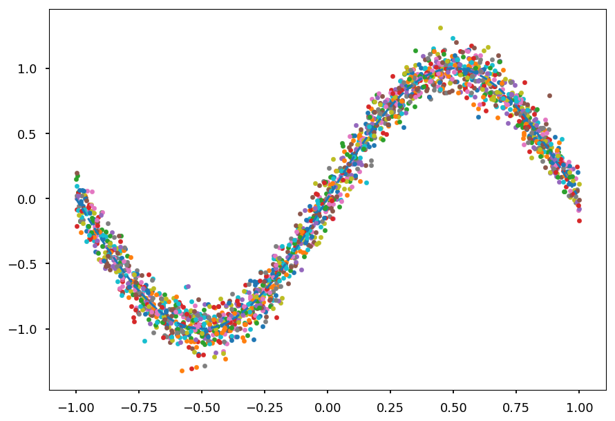
- Now we need to fit each polynomial to each dataset separately
def get_fit(N, data): """Find a fit of polynomial of order N to data = (X, Y)""" return np.poly1d(np.polyfit(data[0], data[1], N)) # for the whole range of possible polynomials orders # create a list of fits to different datasets fits = [[get_fit(order, data) for data in datasets] for order in range(1, 10)]
plt.figure(figsize=(13, 10)) for order in range(1, 10): plt.subplot(3, 3, order) plt.ylim([-1.5,1.5]) for g in fits[order - 1]: plt.plot(x_, g(x_), 'C1-', linewidth=0.1) plt.plot(x_, np.sin(np.pi * x_), 'C0--') plt.title("Polynomial of order {}".format(order)); plt.tight_layout();

Training and test errors¶
-
In real life is impossible (unless one creates data by hand) to calculate true variance and bias
-
One would need all possible datasets D and all possible input values x
-
Thus, usually one looks at training and test errors
-
Training error is measured on the data used to make a fit
-
Test/validation error is measured on unseen data
-
# fake error complexity = np.arange(0.1, 2, 0.1) train_error = -np.log(complexity) test_error = -np.log(complexity) + np.power(complexity, 1) plt.xticks([]) plt.yticks([]) plt.xlabel("Algorithm complexity") plt.ylabel("Error") plt.plot(complexity, train_error, 'C0o-', label='Training error') plt.plot(complexity, test_error, 'C1o-', label="Test error") plt.text(0.1, 0.25, "$\longleftarrow$ high bias", color='C0') plt.text(1.5, 0.25, "high variance $\longrightarrow$", color='C1') plt.legend();
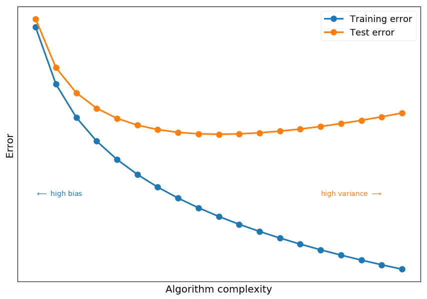
-
High training error indicates high bias (which means underfitting)
-
Training error must decrease with model complexity
-
If the training error is high:
-
Use more complex model (or new model architecture)
-
Use more features - maybe there is just not enough information to make a good prediction
-
Train longer (if the algorithm is an iterative optimization problem)
-
Decrease regularization (next lecture)
-
-
Test error deacreses with model complexity up to a point when algorithm is to sensitive to features seen in training data
-
If test error starts to increase it indicates high variance (which means overfitting)
-
If test error is high:
-
Use more data - easy to say hard to do...
-
Use less features
-
Increase regularization
-
Use different model
-
Ensemble learning¶
-
Lets first define a weak learner as a classifier which is just slighlty better than random guessing
-
The idea behind ensemble learning is to create a strong learner as a combination of many weak learners
-
We will discuss two popular ensemble methods:
-
Bagging (bootstrap aggregating), e.g. random forest
-
Boosting, e.g. boosted decision tress
-
Random forest¶
-
Once we know a way to produce a tree we can create a forest
-
And each tree contributes to a final prediction
-
It is a random forest, because each tree is randomly incomplete - trained only on a random subsets of samples and features (features bagging)
-
The final prediction of a random forest is an avearge predictions (for regression) or a majority vote (classification)
Intuitive / naive example¶
-
Imagine you want to go to a cinema and need to choose a movie to watch
-
You can ask a friend about the recommendation
-
She/he would ask you about movies you watched in the past
-
and (based on your answers) create a set of rules (a decision tree)
-
to finally recommend you a movie (make a prediction)
-
-
Alternatively, you can ask many friends for an advice
-
Each friend would ask you random questions to give an answer
-
At the end, you choose a movie with most votes
-
The algorithm¶
-
Lets imagine we have N samples in our dataset (e.g. N movies you watched)
-
Each sample has M features (e.g. do you like a movie? do you like the leading actor / actress or director?)
-
To create a tree take n random samples from the dataset and at each node select m << M features (m \sim \sqrt M) to find the best predictor
-
Repeat the procedure for next trees until you reach desired size of a forest
+------------+
| |
| Dataset |
+----------+ +----------+
| | N features | |
| | | |
v +------------+ v Hyperparameters:
+-----------------+ +-----------------+
| | | |
| Random subset 1 | . . . | Random subset T |
| | | | - the number of trees
| N features | | N features | - the size of subsets
| | | |
+--------+--------+ +--------+--------+
| |
v v
+-----------------+ +-----------------+
| | | |
| Tree 1 | . . . | Tree T |
| | | |
+--------+--------+ +-----------------+
|
| +-------------+ +--------+
| | | | |
+--------> | M1 features +--------> | Node 1 | - the number of random features
| | | | | - the size of a single tree
| +-------------+ +--------+
|
| +-------------+ +--------+
| | | | |
+--------> | M2 features +--------> | Node 2 |
| | | | |
| +-------------+ +--------+
.
.
.
Boosted trees¶
-
The idea is similar to bagging
-
The key differences are:
-
Data is reweighted every time a weak learner is added (so future learners focus on misclassified samples)
-
The final prediction is weighted average (better classifiers have higher weights)
-
Bagging (parallel)
+--------------------+ +----------------+
| | | |
+----> | Dataset +--------------> | Weak learner 1 |
| | | | |
| +--------------------+ +----------------+
|
|
| +--------------------+ +----------------+
| | | | |
+----> | Dataset +-------------> | Weak learner 2 |
| | | | |
| +--------------------+ . +----------------+
| .
| .
| +--------------------+ +----------------+
| | | | |
+----> | Dataset +-------------> | Weak learner N |
| | | |
+--------------------+ +----------------+
\hspace{140pt}\text{output} = \frac{1}{N}\sum \text{output}_i
Boosting (sequential)
+--------------------+ +----------------+
| | | |
| Dataset +--------------> | Weak learner 1 |
| | | |
+--------------------+ +--------+-------+
|
+------------------------------------+
|
v
+--------------------+ +----------------+
| | | |
| Reweighted dataset +-------------> | Weak learner 2 |
| | | |
+--------------------+ +--------+-------+
|
+------------ . . . --------+
|
v
+--------------------+ +----------------+
| | | |
| Reweighted dataset +-------------> | Weak learner N |
| | | |
+--------------------+ +----------------+
\hspace{130pt}\text{output} = \sum w_i\cdot \text{output}_i
AdaBoost¶
-
AdaBoost is on of the most famous algorithms in machine learning
-
Y. Freund and R. Schapire got a Gödel Prize for this
-
Lets consider N labled training examples (x_1, y_1), \cdots, (x_N, y_N), where x_i \in X and y_i = \left\{-1, 1\right\}
-
The initial distribution is initizlized with D_1(i) = \frac{1}{N}, where i = 1, \cdots, N (so every sample is equaly likely)
-
For t = 1, \cdots, T:
-
train a weak learner using D_t, h_t: X \rightarrow \left\{-1, 1\right\}
-
choose the one which minimizes the weighted error
\epsilon_t = \sum\limits_{i=1}^{N}D_t(i)\delta\left(h_t(x_i)\neq y_i\right)
-
calculate \alpha_t
\alpha_t = \frac{1}{2}\ln\left(\frac{1 - \epsilon_t}{\epsilon_t}\right)
-
For i = 1, \cdots, N update weights according to
D_{t+1} = \frac{D_t(i)}{Z_t}\begin{cases}e^{-\alpha_t} & h_t(x_i) = y_i \\ e^{\alpha_t} & h_t(x_i) \neq y_i \end{cases} = \frac{D_t(i)}{Z_t}e^{-\alpha_ty_ih_t(x_i)}
-
Z_t is a normilization factor so D_{t+1} is a distribution
Z_t = \sum\limits_{i=1}^ND_t(i)e^{-\alpha_ty_ih_t(x_i)}
-
-
The final hyptohesis H is computes the sign of a weighted combination of weak hypotheses
H(x) = \text{sign}\left(\sum\limits_{t=1}^T\alpha_th_t(x)\right)
Out-of-bag error¶
-
Out-of-bag (OOB) error may be used for machine learning models using bootstrap aggregation (like random forest and boosted trees) instead of cross-validation
-
Bagging involves random sampling with replacement
-
Some samples are not used in the training process (out-of-bag samples) and therefore can be used to calculate test error
-
OOB error is the average error over all training samples calculated using predictions from weak classifiers which do not contain particular sample in their bootstrap samples
Example¶
-
Lets consider some fake data generated with
make_blobsfromscikit-learn -
and then apply decision trees with different maximum depths
-
and random forests with different maximum depths
Dataset¶
-
sklearn.datasets.make_blobsallows to generate random Gaussian blobs -
We generate 8 blobs with fixed random generator (just to make sure we get the same set every time)
from sklearn.datasets import make_blobs # generate 5 blobs with fixed random generator X, Y = make_blobs(n_samples=500, centers=8, random_state=300) plt.scatter(*X.T, c=Y, marker='.', cmap='Dark2');

Train and visualize¶
-
To make our life easier we create a function to
-
plot training data on existing axes or new one (if not provided)
-
train given classifier on given dataset
-
create countours representing predictions of the classifier
-
def train_and_look(classifier, X, Y, ax=None, title='', cmap='Dark2'): """Train classifier on (X,Y). Plot data and prediction.""" # create new axis if not provided ax = ax or plt.gca(); ax.set_title(title) # plot training data ax.scatter(*X.T, c=Y, marker='.', cmap=cmap) # train a cliassifier classifier.fit(X, Y) # create a grid of testing points x_, y_ = np.meshgrid(np.linspace(*ax.get_xlim(), num=200), np.linspace(*ax.get_ylim(), num=200)) # convert to an array of 2D points test_data = np.vstack([x_.ravel(), y_.ravel()]).T # make a prediction and reshape to grid structure z_ = classifier.predict(test_data).reshape(x_.shape) # arange z bins so class labels are in the middle z_levels = np.arange(len(np.unique(Y)) + 1) - 0.5 # plot contours corresponding to classifier prediction ax.contourf(x_, y_, z_, alpha=0.25, cmap=cmap, levels=z_levels)
- Let check how it works on a decision tree classifier with default
sklearnsetting
from sklearn.tree import DecisionTreeClassifier as DT train_and_look(DT(), X, Y)

Decision tree¶
- We consider decision trees with fixed maximum depths from 1 to 9
# create a figure with 9 axes 3x3 fig, ax = plt.subplots(3, 3, figsize=(15,15)) # train and look at decision trees with different max depth for max_depth in range(0, 9): train_and_look(DT(max_depth=max_depth + 1), X, Y, ax=ax[max_depth // 3][max_depth % 3], title="Max depth = {}".format(max_depth + 1))
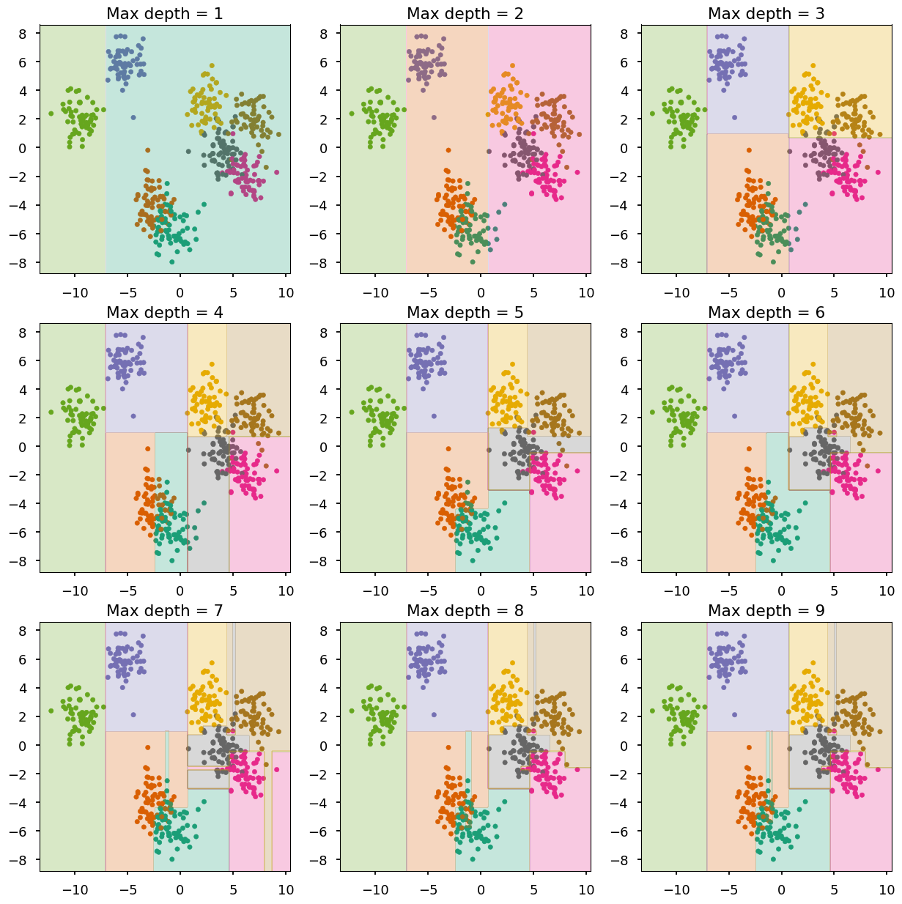
max_depth<= 3 - undefittingmax_depth<= 6 - quite goodmax_depth> 6 - overfitting
Random forest¶
- Lets do the same with random forests (100 trees in each forest)
from sklearn.ensemble import RandomForestClassifier as RF # create a figure with 9 axes 3x3 fig, ax = plt.subplots(3, 3, figsize=(15,15)) # train and look at decision trees with different max depth for max_depth in range(0, 9): train_and_look(RF(n_estimators=100, max_depth=max_depth + 1), X, Y, ax=ax[max_depth // 3][max_depth % 3], title="Max depth = {}".format(max_depth + 1))
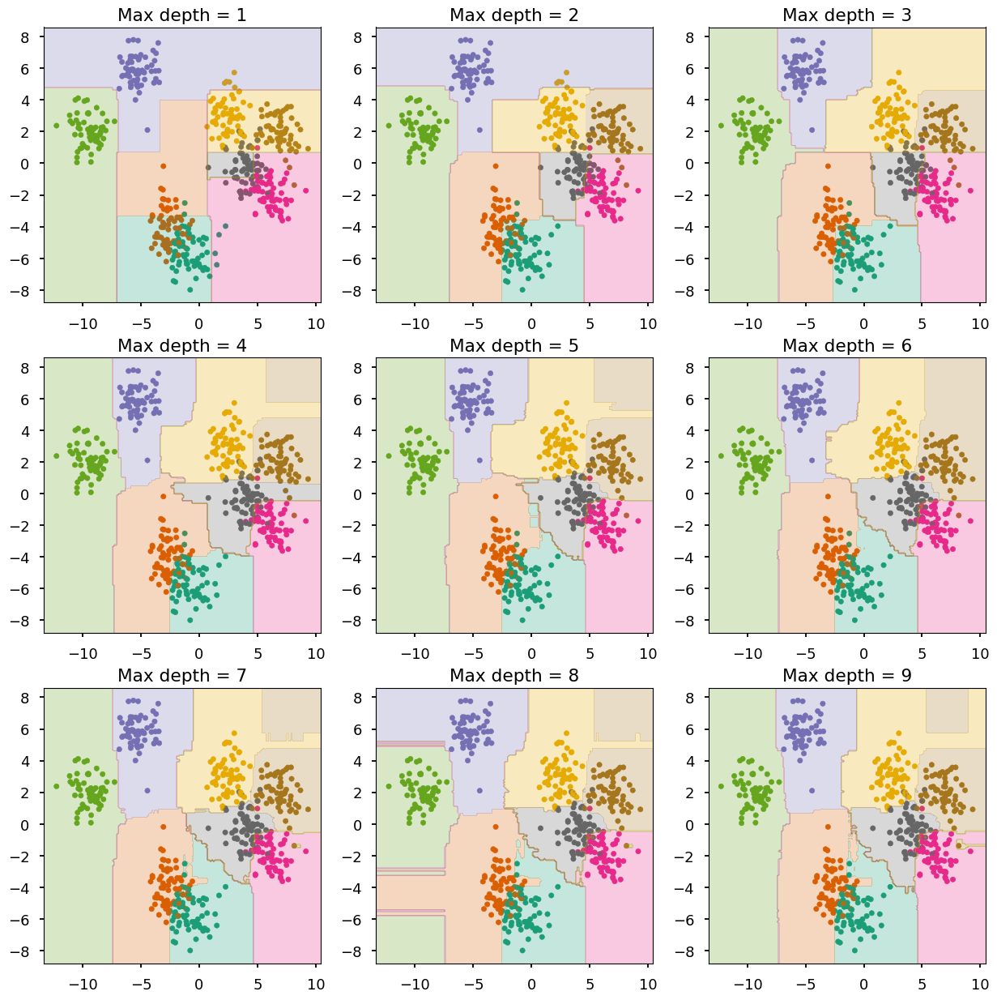
-
The combination of shallow trees (weak learners) does a good job
-
Overfitting is somehow prevented
Summary¶
-
The most important lesson today: bias-variance trade-off
-
For the lecture easy examples are chosen so they can be visualize
-
In real life problems, it is hard / impossible to determine using "bye eye" method if the model is underfitted or overfitted
-
Note, that actually you should never used this method even if you think "your eye" is right - you would be surprised how it is not
-
One needs a way to measure the goodnes of a model - usually mean squared error
-
In practice, most people use cross-calidation technique
-
-
The biggest advantages of decision trees algoritms is that they are east to interpret (it is easy to explain even to non-experts how they work, which is not the case with e.g. deep neural networks)
-
Usually, decision trees are used as weak learners in ensemble learning
-
The most famous boosting algorithm is AdaBoost, because it is a good one and the first one. Although, there are many other boosting methods on market right now with XGBoost being one of the most popular one
-
As for today, deep learning has better publicity, but boosted trees are still one of the most common algorithms used in Kaggle competitions
-
Boosted trees are also popular among physicist and used by them as an alternative to neural networks for experimental elementary particle physics in event reconstruction procedures